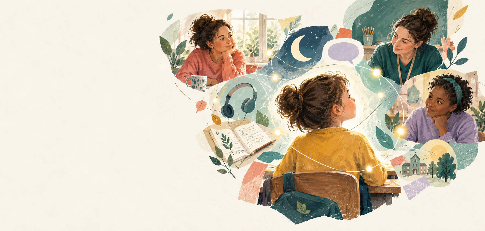

Mum knows he barely slept.
She takes two minutes to tell school. His teacher knows before he walks through the door.
Home check-in
Sleep · restlessBreakfast · skipped
Sleep · restlessBreakfast · skipped
A different future for every child who is hard to read
We believe the world changes when the adults around a child stop seeing separate moments and start seeing the whole person.
See My Mind · Connecting the dots before the behaviour does

The quiet child
“He's no trouble at all.”
What Luca's teacher says at parents' evening.
Luca is seven. He sits quietly, follows the routine and never causes a fuss. But he is working incredibly hard just to hold it together. All day he watches, copies and masks.
By the time he gets home, he has nothing left. The exhaustion happens behind the front door, where school never sees it. Term after term, he slips quietly through the net.
It is not because his teachers do not care. One teacher with thirty children cannot see every piece of a child’s day. See My Mind helps the people around a child connect those pieces.
Every child is a beginning
Four billion years ago, one tiny cell began a story that became the oak, the octopus, the bumblebee, the blue whale — you and me.
Nature never tried to make everything the same. So when we created a child to tell our story, we called him Luca.
Luca stands for every child whose difference is still waiting to be understood. Every child belongs in the picture.
How it works
Same child, same school, same hard morning. The difference is that everyone around Luca can finally see it.
She takes two minutes to tell school. His teacher knows before he walks through the door.
He taps a face on the classroom tablet. He does not have to explain.
She offers his headphones before assembly, not after. No fuss, no scene.
His teacher logs a breakthrough in seconds, so it will not be forgotten by Thursday.
She says, “I heard you helped Harry.” Luca lights up.
Illustrative concept using sample data.
One child. Many points of view.
See My Mind gives each person a useful view of the same child, then brings those views into one shared picture.
A two-minute check-in gives school the context that used to stay behind the front door. The team can respond with understanding before Luca has to explain himself.
The product behind the promise
The platform turns small observations into a living picture of what helps a child — without asking any one person to carry the whole story.
Assembly is usually tricky after a restless night. Try headphones at the door and a familiar first task.
One platform, six useful views
See My Mind connects the whole team without giving everyone the same workload, language or level of access.
See the room at a glance, act on morning context and log evidence without losing the lesson.
Know the next transition, the right sensory support and what to capture in a quick note.
Coordinate inclusion, provision, EHCP evidence, parent invitations and whole-school patterns.
Share what happened before school, see the good moments and keep the home-school bridge open.
Use mood check-ins, visual tools and strengths-based moments to have a voice in their support.
Govern roles, schools, audit trails and data boundaries with confidence.
Why See My Mind exists
“My child was struggling while the adults around him were still gathering evidence.”
See My Mind was founded by Shy El-Ghazi after navigating the UK SEND system as a parent. She watched scattered observations fail to connect, while the child at the centre of the process carried the cost.
With a background in educational technology, SEND advocacy and international partnerships, Shy set out to build the infrastructure she wished had existed: a way to organise the intelligence schools and families already hold, so support can arrive before crisis point.
That lived experience still shapes the product. It is why the platform makes room for home context, pupil voice, small wins and the practical realities of a busy classroom.
Who we are
A team who know the system from the inside, building with the people who use it.
EdTech, SEND advocacy and international partnerships — and a parent who knows what it means to navigate the system from the inside.
Senior school leader and SEND specialist, bringing classroom reality into every design decision.
Enterprise technology leader with deep experience delivering reliable platforms at scale.
Meet Noya
Noya joins up what every adult notices about a child, spots patterns no one person could see and suggests what might help before things escalate.
Built safely, from day one
Each school’s information is kept separate, with controls on who can see what.
Parents see their own child. Staff see the children they support. Nothing more.
Noya suggests. Teachers, SENCOs and parents decide.
Why this is different
We are not asking schools to add another layer of work or asking families to repeat the same story to every professional. We are building the connective infrastructure that lets existing knowledge travel with the child.
Join the next cohort
Our first pilot cohort is live in England and we are building the waitlist for the next group of schools. If you are a headteacher or SENCO who knows this problem from the inside, we would love to hear from you.
Interested in the next cohort?
Tell us a little about yourself and we will be in touch.